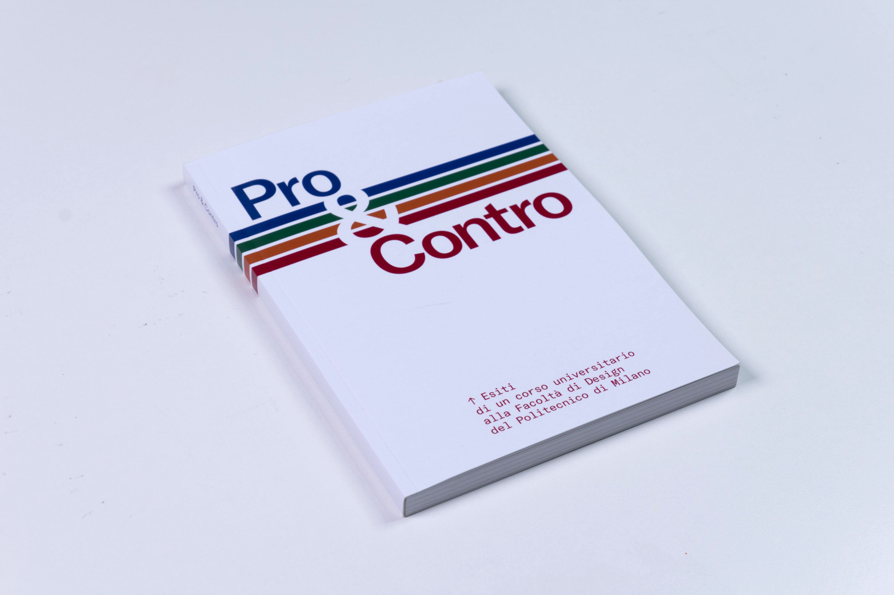
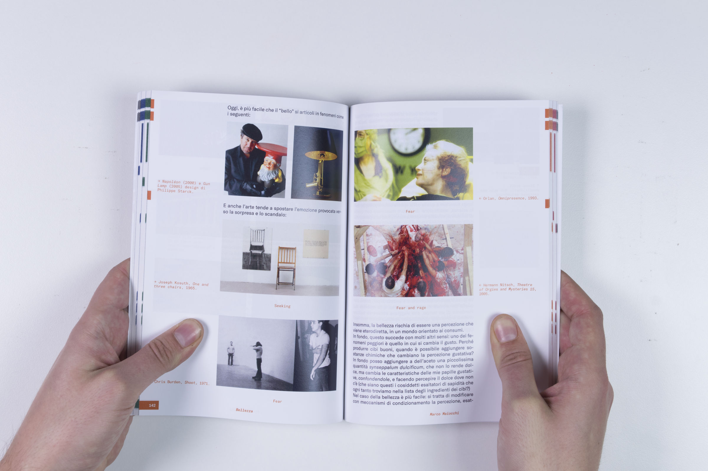
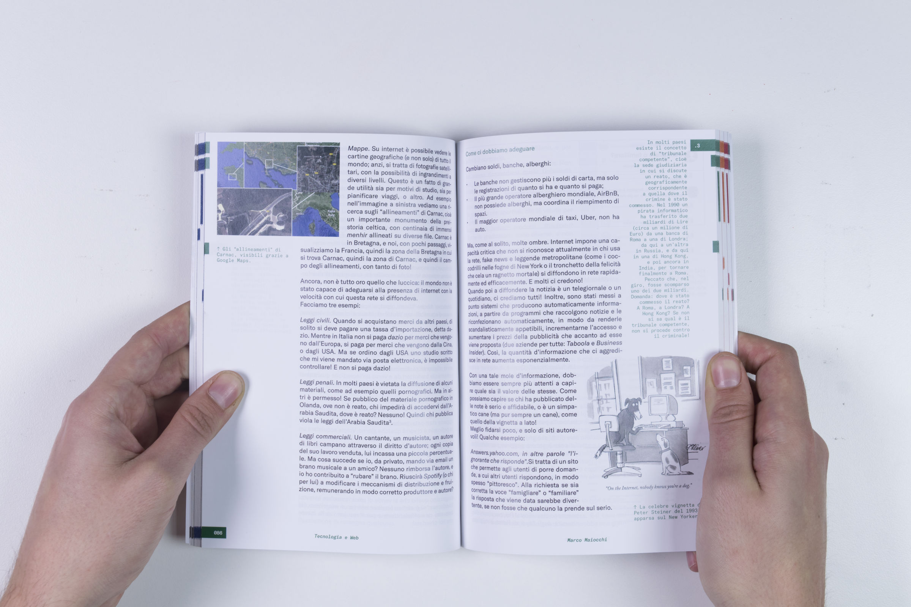
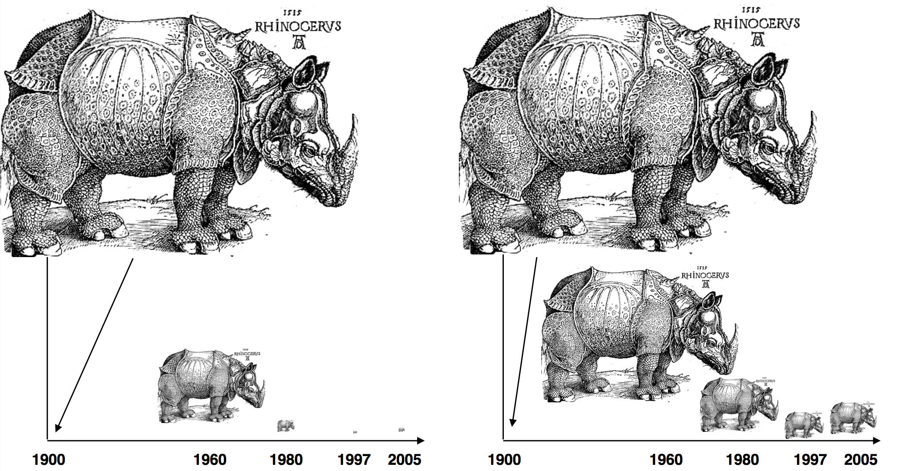

PRO & CONTRO
2017
Collaborative project
Design education often lacks a direct confrontation with its own context and the world in which it will take place
as a practice. Prioritizing the need for immediate answers, effectiveness and excellence, the sense of critical vision falls
in the background.
To work against this trend, Francesco Trabucco and Marco Maria Maiocchi organized Pro & Contro,
a course at Politecnico di Milano aiming towards the eradication and critical analysis of such phenomena
within the design field.
In an attempt to identify where the clichés and stereotypes of the design world come from, collaborative research
and debate were used to reach reasonably based opinions.
Topics of discussion went from Sustainability and Future (anthropic impacts on the planet, electric cars, web, degrowth)
to Technology (AI, consumerism, evolution, fake news) and Obedience (law, civil disobedience, religion).
Every source, article, book, image, graph and word has been taken as doubtful by nature, to challenge its own
truthfulness and accuracy.
The entirety of debates, discussions, sources, images and research essays was collected and archived in a
final editorial volume of around 200 pages.




© 2021 Alessandro Celli